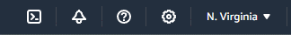

Have you ever wanted to create and host your own website? Starting from scratch can be confusing even when you already know a little HTML and CSS. Lot of companies can help create complex blogs and shopping sites, but sometimes you just need something simple.
There’s an easier way to create website at a fraction of the cost – a static webpage. This tutorial explains how you can create your own webpage with a few lines in a text editor, then will show you two cost-effective ways to hosting this content. You'll get a high-level view of how content is delivered over the internet, and a great way to host your own portfolio, personal site or (almost) anything you can imagine.
What You'll Need
- A basic text editor
- An email address
- A credit card (if you want to sign up for an AWS account)
Create an index.html file
What is a static web page?
Most websites on the internet live on a server – a fancy word for a computer accessible from the public internet. But there’s another kind of website – a static website – that is much more basic.
Static websites don’t need to be run (or hosted) on servers like traditional websites. The code for these websites runs completely in your browser. Since they don’t talk to databases, they can be stored in something called object (or blob) storage.
Internet users can access static sites more quickly then server based sites. Plus, not needing a server makes them significantly cheaper.
Why would I want a static website?
Static websites can’t communicate directly with a database over a server, but they can do almost anything else. Then can still retrieve and send data by sending requests to an Application Programming Interface (API) and play an important role in serverless computing. In fact these days, most browsers are so powerful there isn’t a lot they can’t do.
Static websites also offer many benefits that include:
- Low cost: static websites are significantly cheaper than server-based websites, even one hosted by CMSs like WordPress
- High scaling: static websites are so simple they scale effortlessly even at high volumes of traffic
- Easy deployments: anyone who can create a basic HTML document can deploy one in a few minutes
Writing your own HTML
When you visit a webpage, you're really visiting a file (or group of files) stored on a different computer. Special software on the server makes that file findable by people browsing on the internet. These files contain everything needed to display the page – text, styles, images and code to load other resources.
The one file every webpage must have is an .html file. This is a standard filetype, like .doc or .jpg. When your browser (like Chrome, Firefox or Edge) recieves a .html file over the internet, it translates the code in the .html file (and all it's linked files) into the text, styling and actions you see on your screen.
Web developers use special programs to create and editor their code – but HTML files are just text documents. They can be created in any text editor, but some add additional formatting that can interfere with the code. Simpler text editors are usually better.
The simplest possible web page
The simplest webpage takes only seven lines of code – eight, if you want to add a message (developers traditionally use ‘Hello World’).
The first line of code lets the browser confirm this document contains HTML. Next comes the starting HTML tag (<html>). It’s closing tag (</html>) comes at the very end. Inside there must be a <head></head> tag and a <body></body> tag. The body will contain all your content – words, images and external files that need to be loaded.
<head></head> requirements
The <head></head> tag gives the browser additional information about the page and provides information about how the webpage should be interpreted – like the language, character set and the title of the page. You can also add links to external stylesheets in the head.
Basic HTML tags
You can think of HMTL tags like containers. Everything ‘inside’ the tag is given a specific meaning or style. Only valid HTML tags or pure text can go inside the <html></html> tags.
There are lots of specific HTML tags you can use, but they fall into two categories:
- Semantic Tags like <main></main>, <section></section>, heading and list tags. Semantic tags come with additional built-in features and are important landmarks for people using accessibility devices.
- Non-semantic Tags like <div> and <span> do not carry additional meaning and are good for stylistic elements and containers
How to style content
All browsers have default (or fallback) styles to display a HTML content when no specific styles are provided. If you’re looking for more impact, custom styles can be added directly to elements or by writing another language called CSS inside a pair of <style></style> tags. CSS can also be added in a seperate .css file and linked in the <head></head> tag.
Basic CSS is pretty easy to read. The styles applied to the body tag affect the entire document, while the styles applied to the <h1> tag and the <p> tag in the example above will be applied to all uses of those tags. If you need to be more specific, you can explore adding classes and ids to elements.
Creating a .html file
All you need to do to create a webite is copy one of the code samples above into a text document and save it as file called index.html.
- Copy any of the code samples above onto your clipboard (or experiment with your own!)
- Paste the code into the simplest text editing program you have – you don’t want any additional formatting added
- Save the file and give it the title index.html
Host your site on GitHub
What is GitHub?
GitHub is a website where anyone can share and collaborate on code and other files. While it has many advanced features, it’s also one of the easiest ways to host a static website using a feature called GitHub Pages. Best of all, it’s completely free!
GitHub is based on a language called Git which stores changes (or commits) in different branches. It can compare, combine and keep track of the history of those changes. Git is very powerful – learning even basic commands makes developing websites significantly easier.
Signing up for a GitHub Account
GitHub makes Signing up for an account incredibly simple. Just go to their signup page and provide and email and a password to create a new account.
Creating a GitHub repository
All code in GitHub lives inside a repository (often called a repo).
Creating an empty repository only takes a few clicks:
- Click on the Repositories tab on the top navigation bar.
- On the next page, you should be prompted to create your first repository. If not, click the green New button to the right of the search bar.
- On the repository setup screen, you only need to make a few changes:
- Give a name to your project. This name will be used to access your site, so pick something memorable!
- Make sure the repository is marked as Public
- Select the checkbox that says Add a Readme File
- Click the green Create Repository button
Once you've finished creating your new repository, you should be taken to its homepage automatically.
Your repository’s README.md
Your new repository will be empty except for the README.md you just asked the setup wizard to create. README.md is written in another language called markdown. You can think of markdown as a simplified version of HTML, but you can still do a lot with it.
The README.md file is intended to provide information about a repo – but people use them for plenty of creative purposes! If you'd like to practice writing markdown, this is a great place to do it.
Adding index.html to your repo
There are many ways to add code to GitHub but the easiest ways are directly through the website.
- Option A: Click Add File then Upload files and select the index.html file you created earlier
Option B: Click Add File then Create new file. In the new document dialogue, name the file index.html and paste the entire contents of your HTML document into the textbox below.
- Click the green Commit changes button on the upper right
- A dialog box will pop up asking for more details about the changes you’re making (the commit). Just click Commit changes a second time to close this dialog
- Your index.html file should be visible inside the repository.
What is GitHub Pages?
Your code is now saved in Github! But if you click on index.html inside your repository, you'll just see the code you wrote. The browser isn’t interpreting it (or rendering it) as a web page – so the code is just being treated as text.
For the browser to render your code, you need to configure your repository for public hosting. GitHub has a feature called GitHub Pages you can use to host static webpages for free.
Configuring GitHub Pages to host index.html
Now let's add a feature called GitHub Actions, which will to deploy your site automatically every time you change the code in this repository.
- Click the Settings tab on top of the repository
- Select Pages from the navigation bar on the right
- Under Build and Deployment heading, make sure Source is set to GitHub Actions
- In the Static HTML panel that appears, click Configure
- Some code will appear, but you don’t need to make any changes. Just click Commit Changes on this screen and the next dialog that appears
Navigate back to the Pages section of settings. Now you should see a banner at the top of the page with the link to your live website.
In the next section you will learn another way to share your static websites: hosting directly in the cloud.
Creating an AWS Account
What is the Cloud?
Put very simply: the Cloud is a huge number of tightly-networked computers (servers) all around the world. This network lets us share content fast worldwide, process data more efficiently and instantly deploy new resources. Since computing resources are shared, it can also mean big cost saving for certain projects.
There are several different Clouds (like Google Cloud and Microsoft Azure) which all offer similar functionality. I’m using Amazon Web Services (AWS) in this tutorial since it's the simplest for beginners, but similar concepts should apply to any Cloud Provider.
All Cloud Providers work on a “pay-as-you-go” model, meaning you will only pay for resources you actually use. It also means you need to be careful to watching you're spending – we'll learn an easy way to do this on AWS in a later section.
What is the AWS Free Tier?
AWS provides many services free to new users for the first twelve months. You will be charged for each service separately, so it’s important to check the billing page for each service you are using. AWS provides a calculator that can be helpful to get a rough idea of the costs of using multiple services together.
Simple Storage Service (S3) is the service that will host your static site. Below is the projected cost estimate for hosting a 1GB Website in S3 with 20,000 visits a month (as of 05/23/24): only about 36 cents!
Signing up for an AWS Account
Signing up for an AWS Account is a little more complex than GitHub, since AWS Free Tier Accounts still require you to have credit card on file.
Warning: if you go over the limits of the Free Tier, AWS will charge you automatically.
- Go to AWS Free Tier and click on the yellow Create a Free Account button in the center of the page
- On the next page, enter your email address and the name you’d like to use for your account
- AWS will confirm you have access to this email address by sending you a verification code; enter this number and click Verify email address
- Complete the rest of the sign-up form then click Create account
(Optional) Creating an IAM Role
The account you just created is called a root account – an account with all possible permissions. You can log in and work with this account, but it’s more secure to use a special, limited purpose account (or role) linked to this account. This is called an Identity and Access Management (IAM) role, and it's considered a best practice to use one for day-to-day activities.
If you do create an IAM Role, just make sure you give it permissions to view the Billing and Cost Management Console so you can keep an eye on your spending.
(Optional) Setting up budget alerts
It’s always a good idea to set up alerts for your AWS account in case you get an unexpected surge in traffic or experiment with a service and forget to turn it off. You can create an AWS Budget, then set up budget alerts to automatically let you know (by email or text message) when you’ve gone over your preset budget limit.
What are AWS Regions?
You may have noticed the region selector on the top right of the AWS Console.
Northern Virginia (us-east-1) is the default region, but all accounts can create resources in any AWS Region. You can change to a closer region to decrease the response time from some AWS Services.
Other services are global and do not have regions. S3 is a global service, but you still need to pick a 'home' region for your bucket.
Host your static site with S3
What is S3?
You can think of an S3 Bucket like a file folder in the Cloud – but one that can be accessed by anyone with permission. This makes them great for hosting public content like images, scanned files and raw data – and static websites, of course!
Creating an S3 Bucket
First, we'll create an S3 Bucket to hold your website.
- Search for S3 in the main search bar on the top of the page
- On the S3 Dashboard, click the orange Create bucket button on the far right
- On the next page, give your bucket a globally unique name. Think carefully – if you don’t use a custom domain, this name will be used to access the site

- Under Block Public Access Settings uncheck the box marked All Public Access.

- A yellow warning will appear; click the checkbox to acknowledge AWS doesn’t recommend unchecking this box (unless you are hosting a static website!)
Everything in this Bucket will be public to the entire world, so make sure it won’t be used for anything else - Scroll all the way to the bottom of the page and click the orange Create bucket button
Configuring your S3 Bucket
Now that you’ve created a public S3 Bucket, the bext step is to tell it which file to host.
- On the S3 dashboard, select the Bucket you just created.
- Click the Properties tab at the top of the page, then scroll to the section called ‘Static website hosting’
- Click the grey edit button on the right of the Static website hosting section
- On the page that opens, click enable then fill in the name of your Index document (your home or default page). This is easy – we called it index.html!
Your bucket is now configured and ready to host your website! If you check the Static website hosting box again, you will see the updated information, including the default URL (Uniform Resource Locator) for your new site. But if you visit it right now, you’ll get an error message – the last step is adding the index.html file you created to the bucket.
Adding content to your S3 Bucket
There are many ways to put index.html into S3, including integrating it with GitHub. But it's much easier to simply upload files manually using the S3 Dashboard.
- Click back to the Objects tab and click the orange Upload on the bucket to the right
- Select the index.html file you created earlier
- Be patient – it may take a few minutes before your website is available
(Optional) Add a custom domain
What is a custom domain name?
You probably noticed the name for your website is a little hard to remember. That’s because S3 generate this name automatically by combining the name of the bucket with the region it was created in.
Everything on the internet, including your website, is identifiable by a string of unique numbers called an Internet Protocol (IP Address). IP Addresses make sending things to the right device possible – but they aren’t particularly easy to remember or use, however.
Browsers let us find websites using their Domain Name – something like amazon.com, mit.edu or whitehouse.gov. The Domain Name System (DNS) uses special servers called Nameservers to resolve Domain Names to their IP addresses and direct traffic to the correct site.
There are only so many of these names available for a given domain (the last part of the domain name after the period, like .com and .edu). There are only so many of these names available and you need permission to use certain domains. An organization called ICANN manages the ownership and expiration of Domain Names, but you don’t buy names through them directly. Instead, Domain Names are purchased through a registration service.
Buying a custom domain name on Route 53
There are many different domain registration services, but AWS also has its own service called Route 53. Route 53 lets you browse and buy new domain names, as well as configure domains names from different services.
- Search for Route 53 on the search bar on the top of the page
- On the Route 53 Dashboard, select Register domain on the far right
- Search for a domain name. The results will show you a lot of options with different prices and different domains – if you find one you like, AWS can charge it automatically to the credit card you have on file.
What are domain name records?
When you registered your domain, Route 53 automatically created a Hosted Zone. A Hosted Zone is a series of instructions called Records with instructions on how traffic to your Domain Name should be directed (or routed). If you registered a domain name through another website, you need to set up this Hosted Zone yourself.
You can create different records in this domain to tell Route 53 exactly how to route traffic looking for your website.
Configuring your domain name
We’ll start by creating an A Record – the primary kind of record – to point your new domain name to your website in S3.
- On the Route 53 Dashboard select Hosted Zones from the sidebar on the left
- Select the Hosted Zone named for your new custom domain name
- Click the orange Create record button
- On the next screen, click the Switch to wizard button
- Make sure Simple routing is selected and click Next
- Click Define simple record
- On the next screen, leave the subdomain value blank and make sure the record type is set to A – Routes Traffic to an IPv4 Address and some AWS Resources
- In the dropdown menu under Value/Route traffic to select Alias to S3 Website Endpoint
- Select the region where you created your S3 Bucket, then the URL for your website from the dropdowns below
- Click Create record. If you go back and look at your hosted zone, you should see that Route 53 has created two new records (NS and SOA records) automatically.
Be patient! It may take some time before your new Domain Name routes correctly to your site. These changes need to be made (or propagated) on many different name servers all over the world which can sometimes take several hours.
What can you do next?
Congratulations! Now you know how HTML goes from being a text document to being live and visible on the internet. These are just the basics, but you have plenty of options to continue improving your site:
- Want a more complex code example? Check out the full code for this site in it's repository to see how it's put together.
- Want to make something prettier site? Learn more about CSS and embedding content
- Want to code faster? Download a code editor and learn to use the command line for Windows or Mac. You can use this to install git on your computer and send (or push) code directly from your computer repository (a remote) to your Github Repository
- Want to create an interactive site and load content dynamically? Learn about the JavaScript, it’s simpler form jQuery and getting data from a public API
- Want to add forms and get feedback from your site? AWS has many serverless services like API Gateway, Lamba and SNS that can help you
- Want to go global? Use a Content Delivery Network (CDN) like Amazon CloudFront to serve your content anywhere at lightning-fast speeds.
- See a warning from your browser that your site isn’t secure? Request an authentication certificate through Amazon Certificate Manager to deliver your site over HTTPS instead of HTTP
- Ready to learn about more advanced websites? Find out more about setting up a server, creating databases and querying them with languages like SQL, or dive into one of the many web development frameworks and languages used by larger sites.